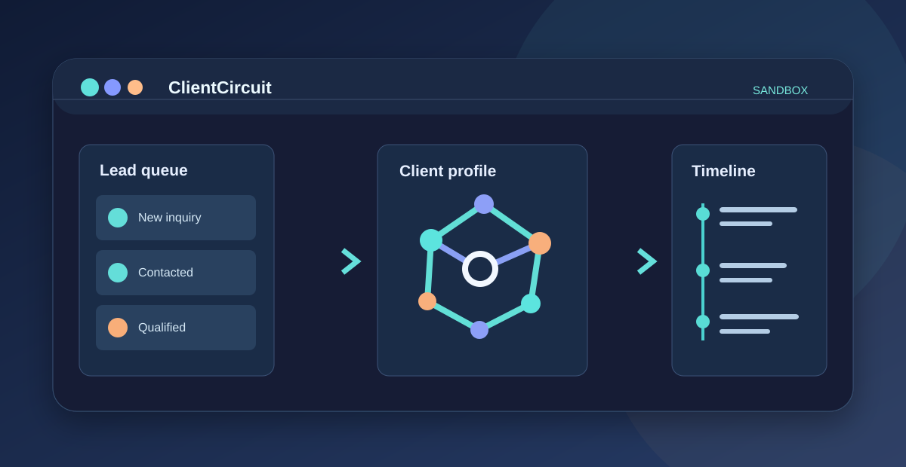

01
01Document automation
Proposal Builder
Solar and battery calculations, financial figures, configurable templates, drafts and history.
Explore case ↗AUTOMATION / INTEGRATIONS / SYSTEMS
I'm Kateryna. I investigate real problems, design practical technical solutions and validate them in use. My background combines IT infrastructure, integrations and AI-assisted development.

Choose a problem to see the most relevant examples of my work.
Calculations, templates, drafts and document workflows.
Four business case studies: calculations, monitoring, CRM and integrations. Interactive demos contain fictional data only.
01Solar and battery calculations, financial figures, configurable templates, drafts and history.
Explore case ↗ 02
02Read-only legacy integration with persistent events, alarm detection and Telegram notifications.
Explore case ↗ 03
03Working MVP for materials, content sources and configuration of LLM connections.
Explore case ↗
04Inquiries → conversations → client records. Unified timeline, team ownership and retry-safe intake in an independent interactive demo.
Explore case ↗A separate collection of independent projects: developer tools, prototypes and AI research. Here the focus is on initiative and technical curiosity.
Starting with AI Development Workbench — a customized development environment for verifying LLM-assisted execution. Additional personal products will appear as individual, validated case studies.
Explore personal case ↗ 01
01LLM sessions, terminal execution, project context and human validation of results.
Explore case ↗Internal systems, CRM/Call Center, monitoring, proposal generation, APIs and LLM integrations.
Infrastructure for 4 buildings and 300+ users: Hyper-V, Windows, Ubuntu, MikroTik, backups and recovery.
Networking, equipment setup, user support and system recovery.
Education: KNTU · Computer Engineering · 2010–2016
My role is to understand the need, organize implementation, verify the outcome and make the software useful in practice. AI helps accelerate implementation; it does not replace testing or accountability.
Open to remote employment and practical work in automation, integrations, monitoring and IT infrastructure.
A professional contact will be added separately. For now, please use the job application platform where you found this portfolio.
My GitHub ↗